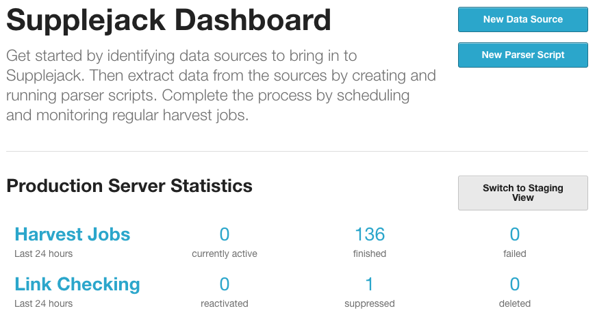
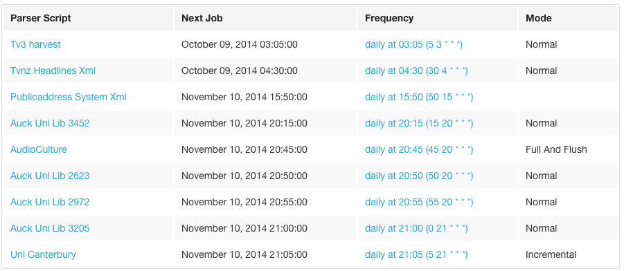
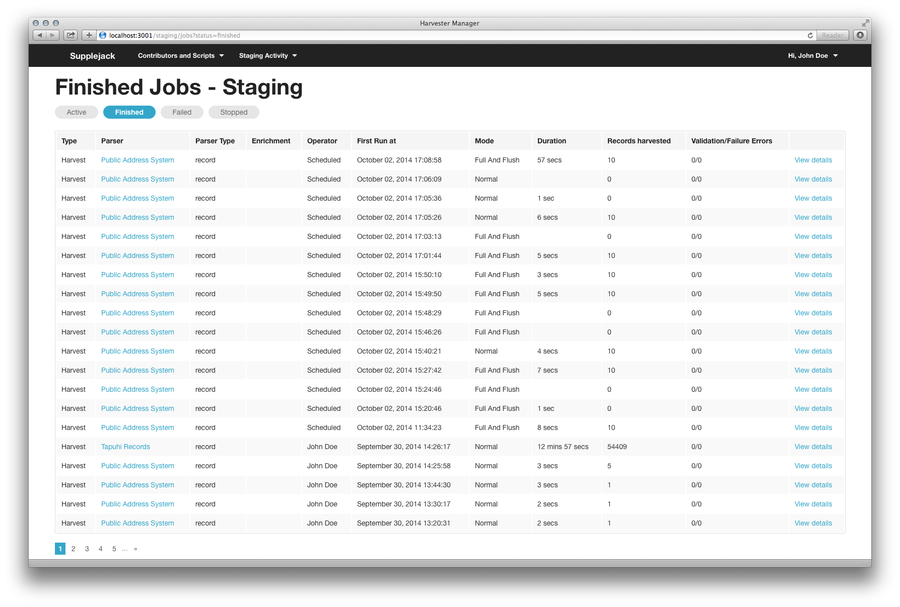
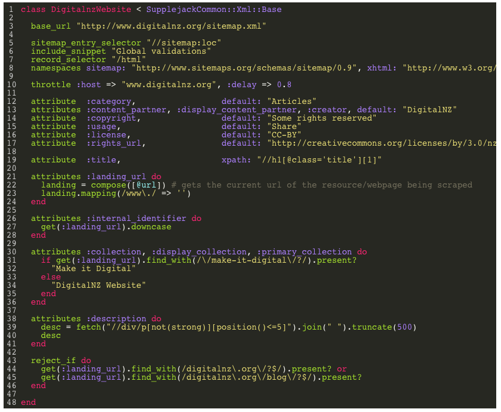
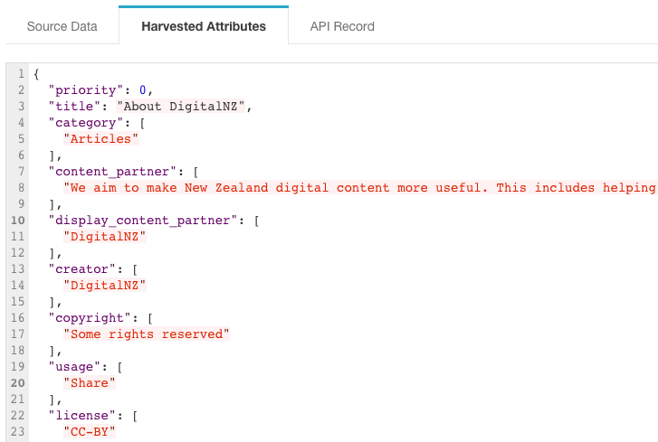
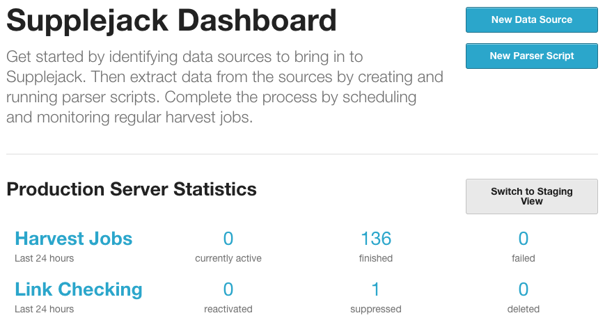
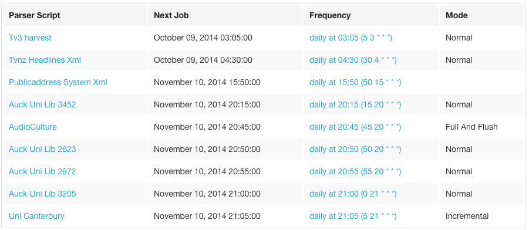
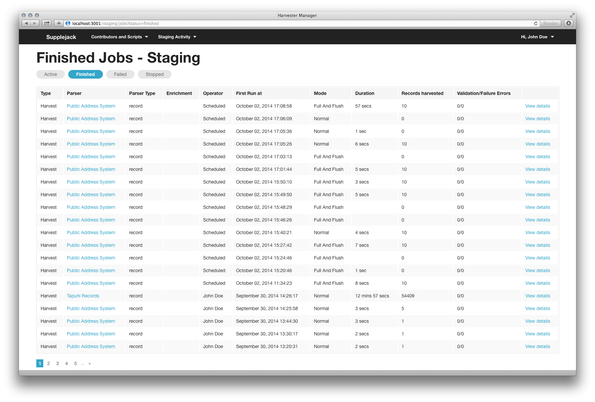
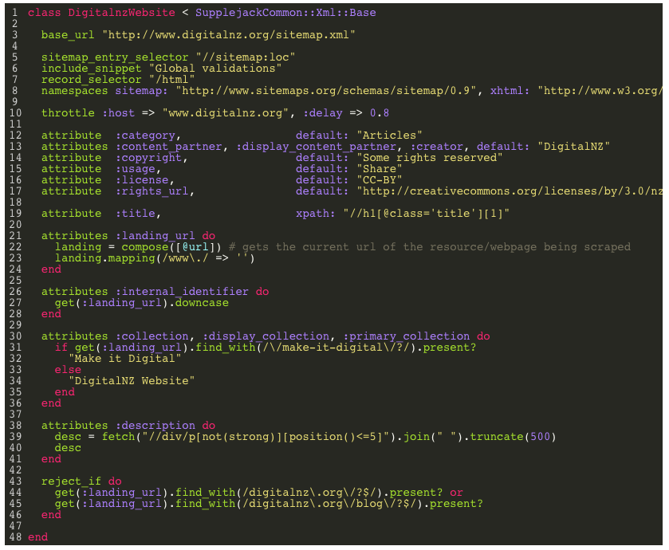
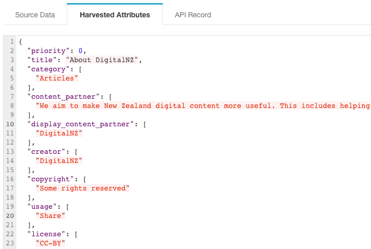

Screenshots
November, 2014
The Supplejack Home Dashboard

View Scheduled Jobs

Review Completed Jobs

Editing a Parser Script

Previewing a Harvest

The Supplejack Home Dashboard

View Scheduled Jobs

Review Completed Jobs

Editing a Parser Script

Previewing a Harvest
